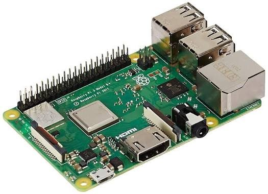
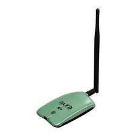
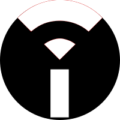
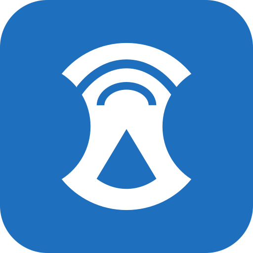

Sans agent sur les postes
Rien à installer sur les ordinateurs. AURA observe le réseau et les ondes depuis l’extérieur des machines.
Plusieurs outils savent déjà faire une partie du travail. Voici, honnêtement, ce qu’AURA apporte par rapport à eux, pourquoi nous faisons ces choix, et sur quel matériel il repose.
Les cases « En cours » et « Objectif » signalent ce qui n’est pas encore en place. Nous préférons l’annoncer plutôt que de le survendre.
| Critère | NetAlertX seul | Scan Wi-Fi ponctuel | NAC commercial | AURA |
|---|---|---|---|---|
| Réseau filaire | Oui | Non | Oui | Oui |
| Écoute Wi-Fi | Non | Ponctuel | Parfois | Oui |
| Corrélation ondes / réseau | Non | Non | Oui | En cours |
| Localisation sur le port de switch | Non | Non | Oui | Objectif |
| Sans agent sur les postes | Oui | Oui | Souvent non | Oui |
| Logiciel libre | Oui | Variable | Non | Oui |
| Coût | Faible | Faible | Élevé | Matériel seul |
Voici les six choix que nous avons faits au début du projet, et sur lesquels nous ne sommes pas revenus depuis.
Rien à installer sur les ordinateurs. AURA observe le réseau et les ondes depuis l’extérieur des machines.
La plupart des outils voient l’un ou l’autre. AURA rapproche les deux pour donner du sens aux indices.
NetAlertX, Kismet, Netdisco : des briques éprouvées, chacune avec sa licence, que nous assemblons.
Les observations restent chez vous, sur votre serveur. Seule l’explication d’alerte peut passer par une IA externe.
Chaque alerte montre la règle qui l’a déclenchée et les indices. La gravité est calculée, pas devinée.
Un projet d’étudiants, assumé comme tel : objectifs, limites et code sont écrits noir sur blanc.
Du matériel accessible, et des rôles séparés : le Raspberry Pi écoute, le serveur rassemble les observations.
Prix relevés le 27 novembre 2026, TTC et hors livraison. Ils bougent souvent, prenez-les comme un ordre de grandeur.


Ralink RT3070, mode monitor et antenne externe. Capture en 2,4 GHz uniquement.
environ 35 € Avenir-Informatique Amazon

Localiser un appareil par la table MAC en SNMP : un objectif à venir, pas encore une fonction disponible.
Prêté par l’IUT

NetAlertX et AURA Core dans une VM, sur XCP-ng et Xen Orchestra.
Hébergé par l’IUT
Nous ne partons pas de zéro. Chaque brique garde sa licence et son dépôt ; dépliez-en une pour voir sa place dans la chaîne et son code.

NetAlertXSurveillance du réseau filaire GPL 3.0Le socle du filaire : scans ARP, DHCP et SNMP, historique et notifications. Nous le prolongeons par des plugins plutôt que de le réécrire, et il reste la source des appareils câblés.
Voir le dépôt ↗ github.com/jokob-sk
KismetÉcoute Wi-Fi sur la sonde GPL 2.0Kismet tourne sur le Raspberry Pi et capte les trames de gestion. Nous lisons son API REST comme un programme séparé, ce qui évite de mélanger du code GPL 2 et GPL 3.
Voir le dépôt ↗ github.com/kismetwirelessSource d’inspiration, pas une dépendance : nous reprenons sa logique de lecture de la table MAC pour retrouver le port physique d’un appareil, recodée en Python.
Voir le dépôt ↗ github.com/netdiscoPiste « si nous avons le temps » : décoder les capteurs radio du bâtiment avec une clé RTL-SDR, en réception seule. Rien n’est émis.
Voir le dépôt ↗ github.com/merbananBrique envisagée côté interface pour dessiner le graphe des appareils et de leurs liens, une fois la corrélation en place.
Voir le dépôt ↗ github.com/d3La FAQ répond aux questions fréquentes. Sinon, écrivez-nous : nous lisons tout.
Projet tutoré BUT3 Réseaux & Télécommunications, parcours cybersécurité · IUT de Valence, Université Grenoble Alpes · 2026–2027